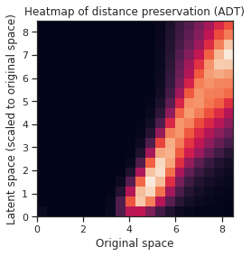
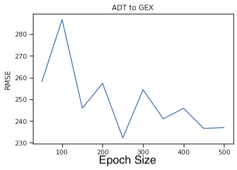
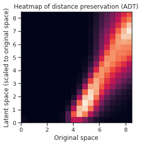
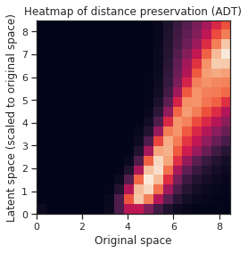

Cells are the basic building blocks of life, thus they are important to how our bodies function. Inside all of our cells are three different forms, or modalities, of genetic information: DNA, mRNA, and proteins. Genes are made up of DNA and every single cell in the human body possesses the same genes. Cells can activate certain parts of the gene to produce specific proteins, allowing the cells in the body to specialize despite drawing from the same set of instructions. These proteins then go on to perform important biological tasks for each cell,
allowing living organisms to function.
Fig 1. Flow of Information across Modalities
An ongoing mission of scientists in the field of biological data science is to predict this flow of genetic information from one modality to another. While researchers have been interested in analyzing single-cell data in the past, modern science lacked methods to accurately measure data pertaining to a cell as a whole without destroying it in the process. This made analysis difficult to perform, they would be left without the ground truth to compare their results to1. However, this issue can be circumvented due to the fact that we know that protein comes from RNA, and so on. This allows us to perform analysis on specific modalities, which can provide us insights that we can extrapolate to cells as a whole.
Our Contribution
There have been previous approaches of applying autoencoders to handle cross-modal biology problems in data science. In 2021, Gala, R., Budzillo, A., Baftizadeh, F. et al. published a scientific article on the application of coupled autoencoders to capture gene expression in neurons. They emphasize the power of a linked network of autoencoders (which they dub as a coupled autoencoder) to simultaneously optimize accurate reconstructions of input data while also ensuring that the representation between different input data is as similar as possible.
In this paper, we propose and utilize a neutral network framework called an coupled autoencoder to handle this cross-modality prediction problem. The coupled autoencoder builds upon the functionality of a single autoencoder, enabling both the reconstruction between and within modalities. A byproduct of this framework is that there is a common embedding, shared by both inputs, which allows us to align both modalities to the same space after encoding. Our goal is to predict one modality from another, from RNA data to protein and from protein to RNA. We implement this autoencoder in our project and find that it is able to perform decently at both clustering the cell types in the latent space, as well as cross-modal prediction. We try to improve this model with further supervision by adding additional loss functions for training and adding a scale factor for the model to learn to reconstruct the data, as we transformed one modality specifically before inputting it into the model. We find that the autoencoder performs quite adequately for RNA to ADT prediction, although further improvements could be made.
Methods
Problem Set Up
As previously mentioned, the objective of our analysis is to perform cross-modal prediction between the two modalities of genetic information. Although the autoencoder framework allows bidirectional prediction, our focus will lie primarily on RNA to protein, as this is the “natural” direction of information flow in cells. The alignment of the latent space for our autoencoder will be judged by visual means, while the reconstruction accuracy will be judged by the RMSE between the reconstruction and the input of the opposite modality.
Coupled Autoencoder
To accomplish our task, we will be using a coupled autoencoder model, which utilizes a type of neural network called an autoencoder. An autoencoder consists of three, necessary layers: the encoder layer, the code (latent space), and the decoder layers. Encoding layers are often put between the input and the code, and decoding layers are put between the latent space and the output layers. As the data passes between layers in the encoding portion of the autoencoder, it undergoes dimensionality reduction, which will help us denoise the data to find the components of it that encode the most information. The decoding layers will then take the compressed version of the data in the code and reconstruct it layer by layer as the data travels back to the output layer. A single autoencoder model framework is shown below.
Single Autoencoder Framework
Fig 2. Single Autoencoder Framework.Has an Encoder network, latent space, and Decoder network
Autoencoders can be connected to share the same latent space, such that they can learn to reconstruct one set of input data from another. We can perform this linkage with our coupled autoencoder, and we can see that both the data for GEX and ADT are aligned. Thus a coupled autoencoder model will be able to predict ADT data from GEX and GEX data from ADT. In order to improve the coupled autoencoder’s predictions, we will need to optimize the architecture as well as add supervision in both the latent space and the outputs.
Coupled Autoencoder Framework
Fig 3. This figure is a coupled autoencoder framework. It contains 2 encoders which reduce the dimensions of both input modalities down to the latent space which then makes it possible to perform cross modality prediction through its 2 decoder layers.
To add supervision in the latent space, we implemented two loss functions. The first loss function is pairwise distance loss functions. We define the pairwise loss function as:
We denote the encoder and decoder layers of the model by Ei and Ej, Di and Dj for GEX and ADT respectively. In addition, we denote the original data as Xi,Xj for GEX and ADT respectively. Z(X) calculates the p-norm distance between each point in the data and is defined as the following, where X is defined as the given matrix for the data. Z(X) is defined as:
While we cannot directly calculate the loss of a cell in the input space and its representation in the embedded space, due to the dimensionality reduction aspect of the autoencoder, we instead attempt to preserve the distance between given cells in the input space and those corresponding cells in the latent space as a workaround. This is the goal of our pairwise distance, where we calculate the summation of all of the differences between the pairwise distance of two given cells in the input space and in the embedding. This loss function is then normalized by how many pairwise distance calculations were made in the summation. The goal of our Pairwise Distance loss is to preserve the distance among the points between the original space, and the embedding in the lower dimensions after the encoding, which would result in the same clusters of cells inherently present in the input space to also be maintained in the embedded space.
Our next loss inside the latent space is Alignment Loss. Since the latent space is shared between the two modalities, we want the embeddings in the latent space to be the same in terms of both position and general clustering patterns. Thus, this loss will be calculated as the mean squared error between the two embeddings, i.e. the mean squared error between the embedding of the GEX data and the ADT data. It is defined as:
To add supervision in the model's outputs, we want to calculate the losses of the same modality reconstruction. The loss for same modality reconstruction is defined as:
We also want the model to calculate losses for cross modality prediction. This is defined as:
Preprocessing of GEX data
The GEX data contains points where certain columns have extremely high values. In the interest of clustering the data by their cell types, those cells can be interpreted as having much further distances from other clusters of cells. This causes the encoder of the model to not accurately cluster up the cell types in lower dimensions because these distant points are dominating. An option to alleviate this issue could be to remove outliers, or to set a maximum value for these distances, but these extreme values may be important to the identity of those cells. Our solution is to log transform and then normalize the data. This allows the data to reduce the large distances from these far points while preserving the distribution of the points in order to be able to cluster up the different cell types accurately in lower dimensions.
Modifications to Coupled Autoencoder
Because of the log and normalization terms we must modify the coupled autoencoder framework in order to undo the log and normalization. To undo the log, we must apply an inverse log function in order to bring the data back to its original form.
To undo the normalization however takes more work. Predicting the GEX from ADT raises some challenges. To undo normalization, it requires a scale factor from the original data. Predicting GEX from ADT data does not give the model the scale factors it requires to undo the normalization as it is not the original GEX data. Thus we must train the coupled autoencoder model to learn this scale factor by adding an extra dimension to the final output of the model. With GEX data being in R^D, the final output of the model prediction will be in R^D+1 (will fix format on the final website). The D+1 dimension will then be extracted and multiplied to the first D dimension in order to output the original data. Thus we allow the model to learn the scale factor on its own to bring its predicted GEX data back to its original form.
Results
Data and set up
The data set for the RNA information, also called GEX (gene expression), contains 43,967 rows and 13,593 columns. The data set for protein, called ADT, contains the same number of rows, but 134 columns. Each row in both the GEX and ADT data set corresponds to the same cell, i.e. row 3 in GEX and row 3 in ADT are information for the same cell in regards to their respective modality. In the GEX data set, the values in each column represent a measurement of the amount of gene expression along the RNA strand in that cell. In the ADT data set, the values in each column represent the amount of a particular protein found in a cell.
The single-cell modality data is taken from 4 sites in the body and is collected from 10 different donors. For our analysis, we subset the cells from Site 1 donated by Donor 2 as our testing batch, and leave the rest for our training. This leaves the training set with 39,525 cells, but due to computational complications, we have to further subset this down to 10,000 randomly sampled cells. We verified that the representation both for different cell types in this smaller subset is representative of the intended training subset.
Coupled autoencoder results
Below We attempt our task with a barebones coupled autoencoder to get a basis for how well the neural network is able to perform without further supervision and improvements. The dimensions of the latent space are confined to 2 for the purpose of visualizing the embedded clustering of cell types. It is very likely that the dimensions for the latent space of an autoencoder optimized for the prediction task may be larger than 2 or 3, and will be harder to visualize.
Coupled Autoencoder GEX Cell Type Clusters in Latent Space
Coupled Autoencoder ADT Cell Type Clusters in Latent Space
Fig 4a,4b.Above we see cell types clusters in the latent space specified with different colors. The two modalities are aligned, as shown with the same types clustered in the same area on the graph.
PCA GEX Cell Type Clusters
PCA ADT Cell Type Clusters
Fig 5a,5b.Above PCA for ADT does not show many cell clusters while GEX shows even less. On top of this, the two embeddings are not aligned.
ISOMAP GEX Cell Type Clusters
ISOMAP ADT Cell Type Clusters
Fig 6a,6b.Above ISOMAPS for ADT and GEX do not cluster well. On top of this, the two embeddings are not aligned.
TSNE GEX Cell Type Clusters
TSNE ADT Cell Type Clusters
Fig 7a,7b.Above TSNE clusters cell types for both GEX and ADT well, but does not align very well. This is shown by different clusters or colors in different distributions between the two graphs
From the three dimensionality reduction methods we first used to explore the data, we can see some clustering of certain cell types with other types inherent in the original input space. PCA and Isomap, shown in Fig 5a. and 6a. for GEX and Fig 5b. and 6b. for ADT were unable to capture any clusters in the data for GEX, but were able to do so for ADT. It may be due to the extremely high dimensionality of GEX that these two methods were not able to handle, indicating that some data preprocessing might need to be performed. t-SNE, shown in Fig 7a. and 7b. actually worked well for not only the ADT data, but GEX, as well. While a good feat as is, using t-SNE results in two separate, unaligned representations of both modalities in this lower dimensionality, which effectively means that there is no learning “between” GEX and ADT.
In comparison, we have plotted the latent space of our coupled autoencoder for GEX in Fig 4a. and ADT in Fig 4b. Our autoencoder performs well in capturing the clustering of the data like t-SNE, but is also able to correctly align the embedded spaces for both modalities. The distribution of the points in both the GEX and ADT modalities are well aligned, as shown by the coordinates of the points and the scales of the axes being very similar.

Fig 8.a. A heatmap to visualize the autoencoder’s ability to preserve the distances in the original space in the latent space. The tick values for the y-axis are not the actual values (actual scale is [0, 290.6882]) for the range of pairwise distances in the latent space, but it is scaled to the same values as the ones in the original space for easier visualization. b. A similar heatmap, but for the embedding of the ADT data (actual scale is [0, 5.183]).
After training the autoencoder model with the optimal parameters, it yields an RMSE of 0.8867 for predicting ADT from GEX and an RMSE of 236.4049 for predicting GEX from ADT. In the heatmaps, the warmer hues indicate a greater count of pairwise distances which fall in that specific bin. Ideally, if the autoencoder could preserve the distances between each point perfectly, then a linear pattern would show on the plots from the bottom left corner to the top right. The autoencoder did decently at preserving the pairwise distances for the embedding of the ADT data in Fig 8b., as the pattern is more linear than the GEX data embedding. The pattern is “narrower” and more defined, indicating that the preservation is more consistent. The embedding of the GEX data in Fig 8a. is less linear, shallow, and less defined, instead indicating that the autoencoder is unable to consistently preserve the pairwise distances between cells.
Improvements
In the earlier visualization of the latent space, we brought the number of dimensions to 2 for easy visualization purposes. For the final model we want to find the optimal number of dimensions in the latent space to give more space for the embedding.
Latent Space Dimension Size
Latent Space Dimension Size
Fig 9a,9b. a. A line plot of the RMSE for cross-modal predictions against varying dimensions that the latent space is set to for the prediction task of GEX to ADT. b. The same graph, but for the task of ADT to GEX instead.
With this in mind, we move the focus onto the predictive task, we calculate the loss of the GEX data reconstructed from the input of ADT data to the actual GEX data by finding the RMSE. Before, we had brought the data down to 2 dimensions in order to visualize the cell type clusters. But for the final model, we want the latent space to be in higher dimensions to give the data more room to transform. After many trials we found that 10 dimensions for the latent space provided the best results as shown above, minimizing the RMSE for both cross-modal predictions.
Epoch Traing Size on RMSE for ADT prediction
Epoch Traing Size on RMSE for GEX prediction

Fig 10a,10b a. A line plot of the RMSE against the number of epochs in the latent space for predicting ADT from GEX. b. The same plot, but for predicting GEX from ADT.
Further research
There are some suggestions in order to improve on our model. First off is the implementation of a K Nearest Neighbor Loss. Due to the large distances of certain points from the other points in the GEX data, a k-NN loss may assist in preserving distances between points and its neighbors (within clusters) while ignoring distant points. However, while we have tried to implement a k-NN approach to preserving distances, we were unable to do so in a way which the autoencoder would be able to efficiently compute the nearest neighbors within each training batch, resulting in the runtime being unfeasibly long. Even with a low number of neighbors, such as 3 or 5, it would take a while for the autoencoder to finish training a single epoch.
Currently we are working with cross modality between GEX or mRNA and ADT or Protein data. Further research can be done on the ATAC data, or the DNA modality. Moving forward with this model, cross modality prediction can be performed between GEX and ATAC data.
In addition to cross modality prediction, modality matching is another task to further this research. The goal of modality matching is to determine the correspondence between single cell profiles. This is different from modality prediction as the output of this task will provide the distribution of probabilities of its predictions which will then return the sum of the weights of its correct match.
The last task for further research is to implement joint embedding from multiple modalities. This task will focus on learning the embedded space between multiple modalities, similar to the cell clusters in the latent space but in higher dimensions. The metrics will focus on alignment, cell cycle preservation and label conservation.
Conclusion
As a result, a coupled autoencoder framework to perform cross modality prediction in single cells will provide great benefits for future study. Our results visualize a common space where two modalities are able to share. Though there are other dimension reduction techniques similar to the encoder layer of our model such as TSNE, PCA, and ISOMAPS, the space between the two modalities are not shared or do not cluster well. The coupled autoencoder framework is able to utilize this shared space between the two modalities in order to predict across modalities. Moving forward, further research will improve on this model. Different Loss Functions such as a K nearest neighbor loss can be added in order to preserve distances more precisely. In addition, different preprocessing techniques may prove to assist in improving the model due to the high dimensions of GEX data. Analysis on single cell data has been difficult in the past to perform, thus accurate predictions will provide great insight on the flow of information inside our cells. This will benefit modern science as it gives insights on how illnesses occur and the intricacies of the human body.
References
Czi. “About Multimodal Single-Cell Data.” Open Problems in Single Cell Analysis, 21 Oct. 2021, https://openproblems.bio/neurips_docs/data/about_multimodal/.
Gala, R., Budzillo, A., Baftizadeh, F. et al. Consistent cross-modal identification of cortical neurons with coupled


 
